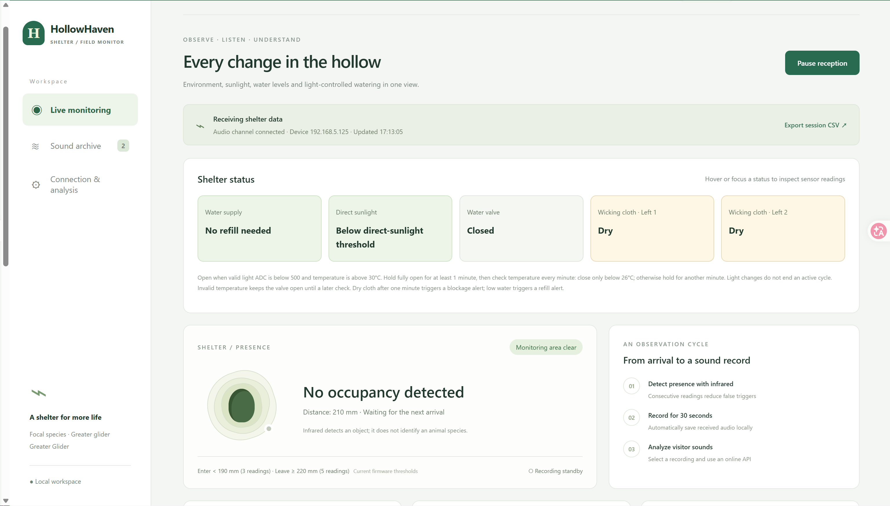
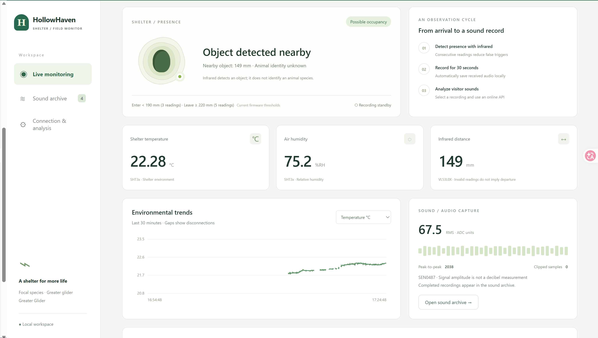
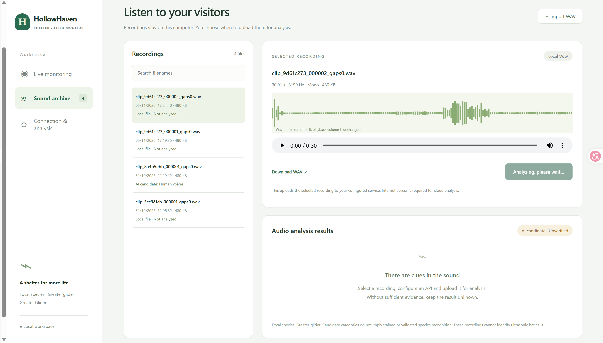
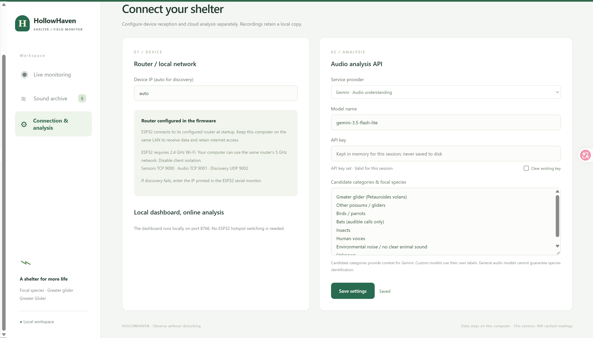

For system users, installers and maintenance personnel. Updated 2 November 2026.
This manual describes the current local project code and wiring. Recheck connections, thresholds and valve direction after replacing hardware or flashing another firmware version. ADC values are raw sensor readings, not direct measurements of millilitres, illuminance or moisture percentage.
1. System overviewContents ↑
HollowHaven uses an ESP32 to monitor temperature and humidity inside a tree-mounted nest box, external light, water level, moisture at two positions in the wicking layer, distance and sound. A computer on the same local network receives the readings and displays conditions and maintenance notifications.
When the light and temperature conditions are met, a valve supplies water to a wicking layer separated from the internal living space to assist cooling. Control runs on the ESP32 and continues when the computer is off or disconnected. The computer cannot record live sensor data during that interruption.
The system requires manual refilling, water-path inspection and power checks. Activity flags and audio AI results support observation; they cannot independently confirm a species or that a nest is empty.
1.1 Intended users and operating conditionsContents ↑
HollowHaven is intended for wildlife conservation staff, researchers and trained field volunteers who monitor artificial hollows. Routine users review dashboard readings, record unusual conditions and arrange refilling. Trained maintenance personnel service the water system and sensors; technical personnel manage firmware, network settings and control thresholds. Routine monitoring does not require programming skills.
The device operates outdoors in a tree, while users normally monitor it from a computer on the same local network and carry out scheduled site visits. Heat, rain, unreliable connectivity and animal occupancy affect when and how maintenance can be performed. Work at height and electrical repairs require suitably qualified personnel. Check for animal activity before approaching and postpone non-essential intrusive work while the nest is occupied.
1.2 Habitat support with minimal interventionContents ↑
Our guiding principle is to provide habitat and support the conditions animals need to live and grow, while keeping human intervention to a minimum. We prioritise observing and recording environmental data and avoid design features that unnecessarily alter natural processes, behaviour or daily rhythms.
Animals remain free to choose whether to enter, occupy or leave the hollow. The system is not intended to direct those choices or control their daily lives. Monitoring results guide habitat maintenance, rather than attempts to make animals use the nest.
Automatic drip cooling is a limited intervention in the nest's physical environment. Its purpose is to support suitable shelter conditions, and its effects should be checked through temperature and humidity records and field observations. Installation, refilling and servicing should minimise disturbance, and unnecessary visits or handling should be avoided.
2. Deployment equipmentContents ↑
| Category | Equipment and preparation |
|---|---|
| Nest structure | Secure nest box, an external wicking layer separated from the interior, and accessible, replaceable wicking material |
| Controller and sensors | ESP32, temperature/humidity sensor, light sensor, water-level sensor, two capacitive moisture sensors, distance sensor and microphone |
| Water supply | Reservoir, refill access, compatible valve and servo mechanism, tubing and fasteners; a manual isolation valve and cleanable filter are recommended |
| Power | Suitable regulated supplies, an external regulated 5 V servo supply, common ground, outdoor protection and cable strain relief; check that a power bank does not shut down at low load |
| Network | 2.4 GHz Wi-Fi coverage at the installation; the receiving computer must be able to reach the ESP32 on the local network |
| Receiving computer | Node.js 18 or later, project files and sufficient local storage |
| Maintenance kit | Data-capable USB cable, spare wicking material and fittings, cleaning tools, a maintenance log and suitable site-access equipment |
For battery or solar power, measure total consumption, including servo movement, before selecting battery capacity, regulators and a charge controller. The current dashboard does not monitor battery charge or solar charging and cannot estimate remaining runtime.
3. Installation detailsContents ↑
3.1 Mounting and weather protectionContents ↑
- Secure the nest box, reservoir and electronics enclosure independently using suitable mounts. Cables and tubes must not support their weight. Avoid damaging the tree and allow room for growth.
- Complete functional checks at ground level before mounting. Check for animal activity before maintenance and avoid opening an occupied nest or handling its internal equipment.
- Use an enclosure suitable for outdoor exposure, weatherproof cable entries and strain relief. Form drip loops before cables enter the enclosure.
- Separate electronics and power connections from stored water. Route drainage so leaks, overflow and wicking-layer runoff cannot reach electronics or the living space.
- Keep refill access, the manual isolation valve, tubing inspection points and the power disconnect accessible. Record the installation location, device ID, wiring photographs and reservoir capacity.
3.2 Sensor placementContents ↑
| Component | Placement requirements |
|---|---|
| Temperature/humidity | Measure representative internal air. Avoid direct sunlight, heated wall contact, wet material and dripping water. Keep ventilation paths clear. |
| Two capacitive sensors | Monitor two representative wicking positions. Keep insertion depth and contact consistent. Only the sensing area should contact the material; protect circuitry and connectors according to the module rating. |
| Light sensor | Orient it to represent actual nest-box exposure. Avoid persistent leaf shading or accidental rotation during maintenance. |
| Water-level sensor | Fix it at the intended low-water detection position. Prevent movement, deposits and reservoir tilt from changing the reading. |
| Distance sensor | Aim at the monitoring area without obstruction from walls, leaves or droplets. Remeasure the empty-nest distance after changing its position. |
| Microphone | Keep it away from water-flow noise, servo vibration and cable rubbing. Provide suitable rain and wind protection without sealing the sound opening with acoustically opaque material. |
3.3 Wiring checkContents ↑
Disconnect power and isolate the water supply before rewiring, unplugging sensors or adjusting the valve mechanism.
| Module | ESP32 signal connection |
|---|---|
| SHT3x temperature/humidity | SDA: GPIO21; SCL: GPIO22 |
| Capacitive moisture sensor 1 | AO: GPIO34 |
| Capacitive moisture sensor 2 | AO: GPIO36 (VP) |
| Light sensor | AO: GPIO39 (VN) |
| Water-level sensor | AO: GPIO32 |
| MG90S valve servo | Signal: GPIO13; external regulated 5 V with ground shared with ESP32 |
| SEN0487 microphone | AO: GPIO33 |
| VL53L0X distance sensor | SDA: GPIO27; SCL: GPIO26 |
ESP32 analog inputs must remain within 0-3.3 V. Verify each module's supply requirements. Never connect a 5 V analog output directly to the ESP32. Do not power the servo from the ESP32's 3.3 V pin.
3.4 Water and network commissioningContents ↑
- Test the reservoir, fittings and valve for leaks at ground level. Confirm that water reaches both sensing positions when open and does not continue leaking through the valve when closed.
- Reservoir height affects gravity-fed flow. Test at the intended installation height and check for kinks, crushed tubing and airlocks.
- Test the separation between the wet layer and interior. There must be no direct leakage or pooling inside. A drawing alone does not establish that humidity is unaffected.
- The configured dual-network firmware tries the preset ZTE network first, then SM-GG if connection attempts fail. Connect the computer to the network the device actually joins. Administrators retain credentials separately; do not publish passwords in the manual or repository.
- Disable client isolation on the router or hotspot. The ESP32 requires 2.4 GHz. The computer may use an interoperable 5 GHz or wired connection on the same router.
- Test reception at ground level and at the final mounting position. Watch for disconnections or restarts during servo movement. For a phone hotspot, verify compatibility mode, coverage and continued availability.
4. Daily operationContents ↑
- Check water availability, clear tubing, a dry electronics enclosure and secure mounting before applying power. The device commands the valve closed at startup; confirm that it closes mechanically.
- Connect the computer to the ESP32's local network. Double-click
HollowHaven.cmdin the project'swebsitefolder. - Open http://127.0.0.1:8766/ for live device data. The separate
nest-microclimate-english.htmlpage displays saved measured curves and does not receive live sensor data. - Set the device address to
auto, save the settings and select Connect. If discovery fails, an administrator can read the IP address through USB serial and enter it manually. - Confirm that the sensor channel is connected and readings keep updating. Review temperature, humidity, water level, both moisture sensors and valve status. An idle audio channel without new recordings does not necessarily indicate a fault.
- The dashboard supports English and Chinese. Select a recording and manually start audio analysis when needed. The API key is held only in the running server's memory and must be entered again after restart. External AI services may charge for requests.
- For continuous recording, keep the computer powered, connected and awake, with the server running. Closing the browser does not stop collection. Shutdown, sleep or stopping the server interrupts reception.
- Run
./stop.ps1in thewebsitedirectory to stop reception. This does not shut off the tree-mounted device or its water supply.
Discovery uses UDP 9002, telemetry uses TCP 9000 and audio uses TCP 9001. If a firewall blocks access, an administrator should configure local-network access for these ports. Public internet exposure is unnecessary.
4A Dashboard walkthroughContents ↑
These are team-supplied screenshots of the running interface. Values show the capture-time state. IP addresses, model strings and filenames are examples of that configuration, not values to copy into another installation.
Live monitoring and CSV exportContents ↑

Open Live monitoring and confirm Receiving shelter data and a changing update time. Review water supply, sunlight, valve and both wick states. Hover or focus a status card to inspect readings. Open/Closed describes the command; confirm actual flow separately.
Select Export session CSV to download the current Node.js session, not all historical sessions. Pause reception stops computer reception; reconnect to resume. It does not power off the ESP32 or stop its local watering logic, and missing telemetry is not backfilled.
Readings, trends and eventsContents ↑

Use the Environmental trends selector for temperature, relative humidity, distance or Sound RMS. The graph covers approximately the last 30 minutes of available readings. Gaps represent unavailable data, not zero values. Sound RMS is ADC amplitude, not decibels.
Object detected nearby means the proximity condition was met, not that an animal species was identified. Entry triggers approximately 30 seconds of audio; wait for capture and transfer before checking the archive. The illustrated 149 mm is a captured reading, not a new threshold. Continuous presence does not repeatedly trigger entry.
Recordings, import and analysisContents ↑

Open Sound archive, search filenames and select a recording. Inspect duration, sample rate, channels, size and waveform. Play or seek using the audio controls; Download WAV saves a copy. Waveforms are automatically scaled and cannot compare absolute loudness between files. The pictured 8190 Hz belongs to that selected file.
Use Import WAV for a complete 16-bit PCM WAV no larger than 8 MiB, mono or stereo, at 1000–192000 Hz. Import stores a local copy without automatically uploading it. The list shows up to 250 recent files; this display limit does not delete older recordings.
Configure a provider first, then select a recording and choose Upload & analyze audio. Wait while Analyzing, please wait appears, then read the candidate, supporting evidence and uncertainty. Cloud analysis requires connectivity and valid account configuration. If it fails, check the provider, model, key and network; the local WAV remains available. AI candidate / Unverified is not confirmed species identity.
Connection and analysis settingsContents ↑

Open Connection & analysis. Usually keep Device IP set to auto. If discovery fails, enter the actual LAN address from the device serial output. Do not copy the screenshot address; the computer and device must be on an interoperable LAN.
Choose Service provider and enter a Model name supported by that provider and available to your account. The screenshot model string is not a compatibility guarantee. For a custom service, enter its API address. Enter the API key, adjust candidate categories if needed, select Save settings and check the feedback. Categories supply context rather than training or validating a model.
The key stays only in the running server memory and must be re-entered after restart. Select Clear existing key and save to remove it. Saving settings does not start analysis. Use the language selector at the top of the interface to switch English and Chinese.
5. Automatic drip controlContents ↑
| Condition or state | Current behaviour |
|---|---|
| Valid light ADC <500 and valid internal temperature >30°C | Command the valve to open |
| Servo reaches the fully open output command | Begin a minimum 60-second hold |
| Temperature <26°C at a subsequent minute check | Command the valve to close |
| Temperature >=26°C, or temperature is invalid | Keep the valve open and check again after 60 seconds |
| Light changes after opening | Light alone does not end the active watering cycle |
| Low water level | Issue a maintenance notification; opening is not inhibited and the valve is not automatically closed |
A full servo movement takes about 13 seconds. The current mechanism uses a 1200 µs opening pulse and a 2500 µs closing pulse. After reassembly, verify direction and travel to avoid forcing the mechanism against its stops. Dashboard valve status represents commands, not measured mechanical position or flow.
In hot conditions the temperature may remain above 26°C for hours, leaving the valve open. There is no maximum watering duration or low-water interlock. Measure consumption, schedule refills and provide a manual means of isolating water. The 30°C and 26°C settings are engineering thresholds, not validated animal comfort limits.
6. Maintenance indicatorsContents ↑
| Reading or symptom | Meaning | Required action |
|---|---|---|
| Water ADC <50; refill or “below 50 ml” message | Low-water notification. “50 ml” is an existing label, not a calibrated volume measurement. | Check actual water level, refill and verify the reading changes. Inspect for leaks and deposits on the sensor. |
| Either moisture ADC >=2300 | That location is classified as dry. | Observe wetting after opening. Persistent dryness may indicate no supply, blockage, poor contact or sensor failure. |
| Moisture ADC <2000 | That location is classified as wet. | Compare with the actual material. A wet reading after closing can reflect retained water. |
| Moisture ADC from 2000 to below 2300 | Previous wet/dry state is retained; startup or invalid readings may be unknown. | Inspect trends and contact rather than diagnosing from a single intermediate value. |
| Either position remains dry after 60 seconds fully open | Possible blockage notification. | Check reservoir, isolation valve, tubing, outlet and wicking material. The notification cannot identify the exact supply fault. |
| Valve open and actual water level falling, but a capacitive reading shows no discernible change | Suspected capacitive sensor fault, or leakage, uneven wetting or wiring trouble. | Confirm the sensing position is wet, inspect wiring and perform a controlled dry/wet test. Replace an unresponsive sensor after verification; see Section 7.3. |
| Valve shown open but no flow | Commanded state does not match the water path. | Check servo power, linkage, travel and tubing. Isolate water before repair when necessary. |
| Temperature keeps rising despite water delivery | Cooling performance needs investigation; temperature alone does not diagnose a fault. | Check sunlight, water delivery, sensor position and wetting coverage. Review complete temperature curves. |
| Unexpected humidity rise or internal droplets | Cooling, weather, leakage or ventilation changes may be involved. | Compare temperature changes and inspect the separation layer, drainage and ventilation. Isolate water if it leaks inside. |
| Temperature/humidity unknown, invalid or implausible | Missing data or a sensor problem. | Inspect power, plugs, I²C wiring, condensation and damage. Invalid temperature during watering does not automatically close the valve. |
| No new reading for about six seconds, or stale status | The dashboard cannot confirm present conditions. | Check device power, Wi-Fi, computer sleep and server operation. Old readings are not current conditions. |
| Frequent disconnection or device restart | Possible network or power problem. | Record the time and check whether it coincides with servo movement. Inspect supply, connectors, signal and hotspot. |
| Distance persistently invalid, fixed or inconsistent with occupancy | Possible obstruction, condensation, mounting change or wiring problem. | Clean the optical window, check alignment and remeasure empty-nest distance. Invalid data does not mean the animal has left. |
| Abnormal microphone readings or noisy recordings | Water flow, wind, vibration or power may be affecting audio. | Listen to the original recording and inspect mounting and protection. Sound readings are not calibrated decibels. |
Provisional distance thresholds mark proximity after three consecutive readings at or below 189 mm and exit after five consecutive readings at or above 220 mm. These depend on mounting geometry. An administrator should verify the implementation and measured empty-nest distance; do not interpret the threshold as animal size.
A disconnected analog wire can still produce a plausible ADC value. Combine inspection, trends and notifications rather than assuming a displayed number proves sensor health.
7. Maintenance procedures and scheduleContents ↑
These are initial maintenance intervals. Adjust them to actual consumption, weather, contamination and connection reliability.
| Timing or trigger | Inspection |
|---|---|
| First day after installation and after the first hot-weather watering cycle | Review temperature/humidity, actual flow and shutoff, wetting at both positions, leakage and power stability. |
| Daily remote review; more often during heat | Check fresh data, refill/blockage messages, valve-open duration, restarts and computer storage. |
| According to measured consumption; immediately at low water | Refill and record the amount. Shorten inspection intervals during continuous watering. |
| Suggested weekly site visit and after strong wind or heavy rain | Inspect mounting, cables, enclosure ingress, tubing, wicking material, sensor position and allowance for tree growth. |
| Suggested monthly and after replacing components | Recheck sensors, low-water detection, valve travel, flow and empty-nest distance. Back up data. |
7.1 Refilling and clearing blockagesContents ↑
Check animal activity before approaching and follow the site procedure. Keep circuits and connectors dry during refilling. Use clean water suitable for the materials and habitat, and close the reservoir to limit debris.
For a blockage notification, first check water availability and the manual isolation valve, then tubing, filter, valve and outlet. Isolate water and disconnect relevant power before disassembly or cleaning. Afterwards, observe a test cycle: both moisture readings should respond, the interior should remain free of leaks and closing should stop flow. Clearing the message alone does not resolve the fault.
7.2 Sensors and wicking materialContents ↑
Disconnect power before cleaning probes using a method allowed for the module. Do not immerse non-waterproof circuitry. Replace damaged, heavily soiled or unevenly wetting material. Restore sensor position and verify dry/wet readings. If thresholds no longer fit, an administrator must update them and reflash the device.
Compare temperature/humidity against a reliable reference instrument without warming the sensor by hand immediately beforehand. Test low-water detection with known refill amounts. Verify the light threshold under actual sun and shade; do not label raw ADC as lux.
7.3 Capacitive sensor fault diagnosis and replacementContents ↑
Investigate when the valve is open and the actual reservoir level is falling, but one or both raw capacitive ADC readings show no discernible response during wetting. Inspect raw trends, not only wet/dry labels: hysteresis can hold a label unchanged while readings move.
This is an added manual inspection criterion, not an automatic notification currently implemented in the dashboard or firmware. Water ADC is not calibrated for continuous volume measurement, so a short ADC decrease does not prove a known quantity was delivered. Determine the observation window and minimum meaningful change through normal wetting tests; do not assume exact equality or an arbitrary tolerance.
- Check timestamps to confirm fresh readings and exclude a frozen display caused by disconnection.
- Confirm water follows the intended path and reaches the material at the sensing position. If the reservoir falls while this position stays dry, investigate leakage, diversion, poor contact and uneven wetting first.
- Isolate water and disconnect power. Inspect supply, ground, AO wiring, connectors and the sensing surface. Restore power for an observable dry/wet comparison without wetting unprotected electronics.
- If the location changes from dry to wet, wiring is sound and raw ADC still does not respond, classify the sensor as faulty and replace it. A technician may substitute a known-good module to distinguish sensor failure from cable or ADC-input faults.
- Before replacement, isolate water and disconnect power. Fit an equivalent module at the original position and depth. Sensor 1 connects to GPIO34 and sensor 2 to GPIO36; verify a 0-3.3 V output.
- Repeat dry/wet, flow and shutoff tests. Confirm readings respond and states are correct. If the replacement does not match the 2000/2300 thresholds, recalibrate and have an administrator update configuration. Record the replacement and restore operation only after successful checks.
7.4 Connection troubleshootingContents ↑
- Confirm the ESP32 is powered. Check its indicator, connections and enclosure for water ingress.
- Confirm the computer can access the network actually joined by the device, including the fallback network if selected.
- Check that the hotspot remains on, supports 2.4 GHz compatibility and is not screened by the trunk or enclosure.
- Confirm the server is running and the computer is awake. Rediscover using
autoinstead of repeatedly using an outdated IP address. - If necessary, safely restart the device and use USB serial logs to investigate disconnection or reset reasons. Repeated restarting is not a lasting repair.
7.5 Shutdown and fault responseContents ↑
For leakage, enclosure water ingress, a jammed servo or abnormal heating, safely isolate water and disconnect power before repair. A de-energised servo cannot complete a closing command. Use the manual isolation valve or disconnect the water source to ensure flow stops. Repeat commissioning checks before restoring service.
8. Data storage and handoverContents ↑
- Live telemetry is saved on the receiving computer in
website/data/session_*.csv; recordings are stored inwebsite/recordings/. - The ESP32 does not backfill a complete telemetry history for periods without reception. Document these gaps after reconnection.
- Device audio uses limited circular storage, not a long-term archive. Regularly back up recordings received by the computer.
- Log device ID, time, symptom, actual water level, relevant ADC readings, valve state, corrective action, replaced parts and retest results.
- Distinguish historical measurements from live readings. Historical charts cannot determine current field maintenance needs.
- When changing computers, transfer project files, records and non-sensitive settings. Administrators should configure API keys and Wi-Fi passwords separately.
9. Pre-deployment checklistContents ↑
- □ Correct wiring, analog inputs within 3.3 V, external 5 V servo supply and common ground.
- □ Secure box, reservoir and enclosure; cable strain relief, protected entries and drip loops.
- □ Opening delivers water, closing stops flow, and both wicking positions become wet.
- □ No direct internal leakage or pooling; drainage avoids electronics and the living space.
- □ Low-water notification verified; operators understand there is no automatic low-water shutoff.
- □ Dry/wet classification verified. Supply-loss or blockage tests are controlled and can be stopped promptly.
- □ Startup closure, temperature-triggered opening and minute checks verified under controlled ground-level conditions.
- □ Continuous reception at the final location, without resets or power loss during servo movement.
- □ Computer server and wake settings checked; CSV data and recordings save correctly and can be backed up.
- □ Responsible personnel know how to refill, manually isolate water, disconnect power and arrange site visits.
Technical basis: current configuration, firmware control logic, setup documentation and dashboard implementation in the project repository.